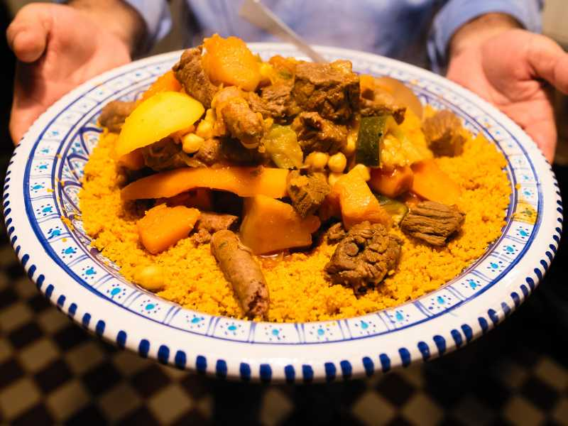

Couscous

Description
Tunisian couscous is a flavorful North African dish made with steamed semolina, vegetables,
and spiced meat or fish. It is known for its rich aroma, vibrant colors,
and a perfect blend of spices like harissa and cumin.
Ingredients
- 2 cups couscous
- 2 tablespoons olive oil
- 1 onion, chopped
- 2 cloves garlic, minced
- 2 carrots, sliced
- 1 zucchini, chopped
- 1 can chickpeas, drained
- 2 tomatoes, diced
- 1 teaspoon harissa (Tunisian chili paste)
- 1 teaspoon ground cumin
- 1 teaspoon paprika
- Salt and pepper to taste
- 1 pound lamb, chicken, or fish (optional)
- 4 cups vegetable or chicken broth
- Fresh cilantro or parsley for garnish
Steps
- Heat olive oil in a large pot and sauté the onion and garlic until soft.
- Add the carrots, zucchini, tomatoes, and chickpeas, then stir in harissa, cumin, paprika, salt, and pepper.
- Pour in the broth and bring to a simmer.
- If using meat or fish, add it to the pot and cook until tender.
- Meanwhile, prepare the couscous by steaming or soaking it in hot water according to package instructions.
- Fluff the couscous with a fork and serve it on a plate.
- Spoon the vegetable and broth mixture over the couscous, adding the meat or fish on top if included.
- Garnish with fresh cilantro or parsley and serve warm.
Home